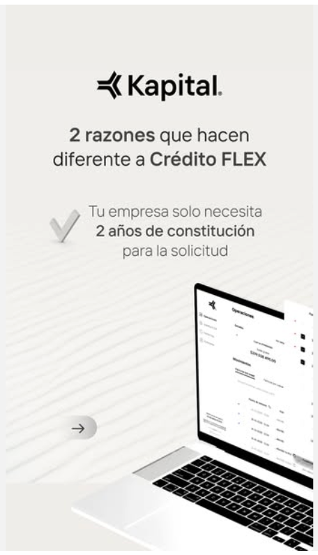
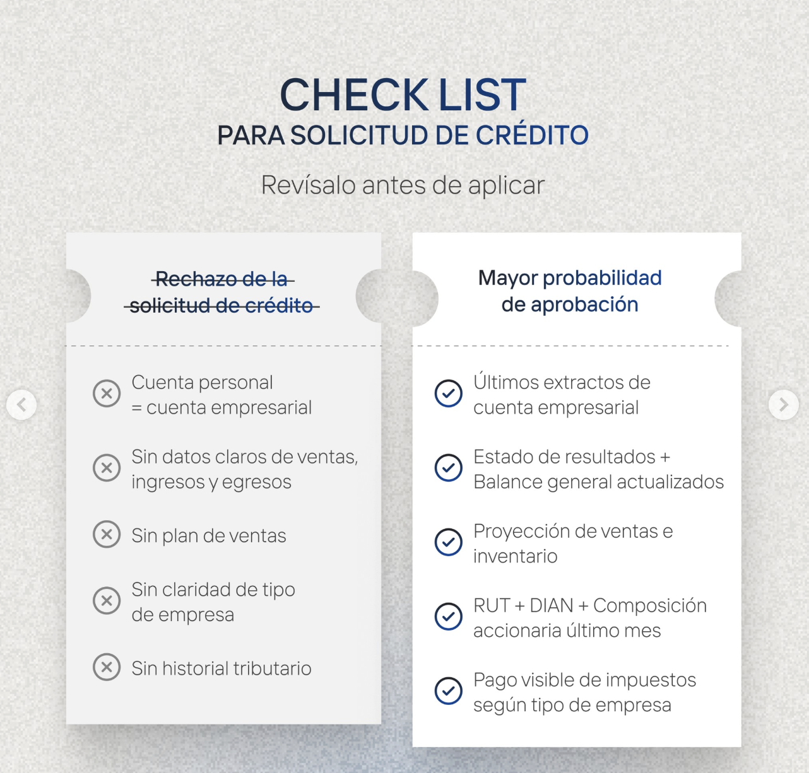

Detectar qué sostuvo el volumen, qué lo rompió y qué debemos corregir.
Sempli
Análisis de
rendimiento
y optimización
Revisión del desempeño entre noviembre y marzo para identificar quiebres, señales de recuperación y oportunidades de optimización de corto plazo.
Meta Ads
Google Ads
Noviembre - marzo
Objetivo
Qué sostuvo la cuenta
y qué debemos
corregir.
Analizar el rendimiento de la cuenta de Sempli durante la administración de Básica para identificar oportunidades de mejora y definir un plan de acción de corto plazo.
Meta Ads, Google Ads, diseño de anuncios y evolución del negocio.
Un plan de acción puntual para los próximos 30 días.
Periodo analizado
De la preparación
operativa al análisis
del periodo.
Básica recibió los accesos de la cuenta en octubre e inició el proceso de revisión, preparación operativa y desarrollo de nuevas piezas.
La operación activa comenzó el 10 de noviembre e incluyó la administración de Google Ads y Meta Ads, el diseño de anuncios, su implementación y la optimización continua de campañas.
Para este análisis, se revisa el desempeño entre noviembre y marzo, integrando resultados de pauta y evolución del negocio para identificar hallazgos y oportunidades de mejora.
Revisión inicial, preparación operativa y desarrollo de piezas.
Administración de pauta, implementación y optimización continua.
Desempeño de pauta y evolución del negocio en una sola lectura.
Reporte mensual
Noviembre y diciembre
Primer tramo de lectura: estabilidad de volumen y una contribución positiva del canal digital antes del quiebre de enero.
Noviembre
Meta Ads
US$15.71
Costo por registro completado
57
Registros completados
Google Ads
US$6.36
Coste por conversión
98
Conversiones
Negocio
24
Adquisición
15.38%
CVR adquisición
5
Canal ADQ Digital y Anuncios
Diciembre
Meta Ads
US$19.69
Costo por registro completado
41
Registros completados
Google Ads
US$5.72
Coste por conversión
90
Conversiones
Negocio
10
Adquisición
6.80%
CVR adquisición
3
Canal ADQ Digital y Anuncios
En diciembre, la cantidad de registros suele disminuir por un efecto de temporalidad del segmento.
Reporte mensual
Enero y febrero
Tramo crítico del periodo: cambios de medición y ajustes en formularios afectaron el rendimiento de la cuenta.
Enero
Meta Ads
US$76
Costo por registro completado
12
Registros completados
Google Ads
US$11
Coste por conversión
42
Conversiones
Negocio
4
Adquisición
1.47%
CVR adquisición
1
Canal ADQ Digital y Anuncios
Cambio de píxel en Meta: antes se contaba un registro inicial y luego solo registros con documentación completa.
Cambios en formularios afectaron la conversión en Google Ads.
Febrero
Meta Ads
US$50
Costo por registro completado
13
Registros completados
Google Ads
US$8.67
Coste por conversión
56
Conversiones
Negocio
6
Adquisición
1.83%
CVR adquisición
0
Canal ADQ Digital y Anuncios
Entre enero y febrero se desarrolló la campaña de cesantías.
Reporte mensual
Marzo
Primeras señales de recuperación a partir de ajustes creativos y una nueva estructura de lectura de segmentación.
03
Marzo
Meta Ads
US$25
Costo por registro completado
33
Registros completados
Google Ads
US$8
Coste por conversión
54
Conversiones
Negocio
6
Adquisición
1.58%
CVR adquisición
Acciones implementadas
- Se realizó la campaña de vehículos.
- Se optimizaron copies y segmentaciones.
- Los ajustes se hicieron con base en la nueva estructura de Andrómeda.
Tabla resumen del periodo
Lectura consolidada
del desempeño.
La tabla permite identificar rápidamente la evolución del costo en Meta Ads, la estabilidad relativa de Google Ads y la caída de adquisición y CVR después de noviembre.
| Mes | Meta: Costo por registro completado | Meta: Registros completados | Google Ads: Coste por conversión | Google Ads: Conversiones | Adquisición | CVR adquisición | Canal ADQ Digital y Anuncios |
|---|---|---|---|---|---|---|---|
| Noviembre | US$15.71 | 57 | US$6.36 | 98 | 24 | 15.38% | 5 |
| Diciembre | US$19.69 | 41 | US$5.72 | 90 | 10 | 6.80% | 3 |
| Enero | US$76.00 | 12 | US$11.00 | 42 | 4 | 1.47% | 1 |
| Febrero | US$50.00 | 13 | US$8.67 | 56 | 6 | 1.83% | 0 |
| Marzo | US$25.00 | 33 | US$8.00 | 54 | 6 | 1.58% | — |
Análisis general del rendimiento
El quiebre y la
recuperación
de la cuenta.
Noviembre y diciembre mostraron estabilidad
La cuenta sostuvo volumen y una contribución positiva del canal digital a adquisición, con resultados favorables frente a periodos anteriores.
Enero marcó el mayor quiebre del periodo
El cambio de píxel en Meta y los ajustes en formularios afectaron la medición y la conversión, impactando directamente el rendimiento de la cuenta.
La lógica anterior de segmentación perdió efectividad
La cuenta dejó de responder bien a intereses detallados y empezó a requerir una estructura más abierta, con mayor peso del creativo y del mensaje.
Marzo muestra señales de recuperación
Meta mejora en costo por lead, Google se mantiene estable y los ajustes empiezan a alinearse con una nueva lógica de segmentación y optimización.
El principal reto de la cuenta no fue solo optimizar campañas, sino adaptarse a un nuevo contexto de medición, segmentación y lectura del algoritmo.
Oportunidades de mejora y nuevo enfoque
Recuperar eficiencia
con un enfoque
nuevo.
Meta Ads
- Crear más de 10 variaciones de anuncios.
- Probar formatos realmente distintos entre sí.
- Salir de piezas repetidas tipo presentación o animadas.
- Excluir rechazados y construir lookalike 1%.
- Mantener segmentación abierta.
- Usar intereses solo como señal para el algoritmo.
Google Ads
- Hacer anuncios con mensajes más explícitos.
- Filtrar mejor desde la intención de búsqueda.
- Hablarle de forma directa al perfil ideal.
- Ejemplo de enfoque: “Empresas que facturan mínimo 300M al año”.
Aterrizaje
- Ajustar la promesa principal del landing.
- Ser más claros sobre el tipo de empresa objetivo.
- Reducir rechazo desde la entrada.
- Mejorar la calidad del lead desde el primer clic.
días para empezar a ver resultados de los cambios.
Análisis de competencia
Cómo se está
filtrando
el mercado.
Benchmark visual de mensajes, ofertas y enfoques creativos observados en Meta Ads y Google Ads para detectar oportunidades de mensaje y posicionamiento para Sempli.

Meta Ads
Kapital
- Mensaje principal
- “Tu empresa solo necesita 2 años de constitución”.
- Oferta o promesa
- Crédito FLEX con filtro claro desde la primera pieza.
- Aprendizaje para Sempli
- La claridad del filtro mejora la calidad del clic.

Meta Ads
Competidor checklist
- Mensaje principal
- “Revísalo antes de aplicar”.
- Oferta o promesa
- Checklist de documentos y criterios visibles.
- Aprendizaje para Sempli
- Rechazos y mínimos ordenan la expectativa del lead.
Google Ads | Patrón observado
Crédito empresarial para compañías que facturan mínimo 300M al año
Filtro por intención y perfil ideal desde el titular.
Google Ads
Patrón de búsqueda competitiva
- Mensaje principal
- “Empresas que facturan mínimo 300M al año”.
- Oferta o promesa
- Solución dirigida al perfil empresarial más calificado.
- Aprendizaje para Sempli
- En búsqueda, el filtro debe empezar desde la intención.
Análisis de rendimiento y optimización